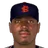
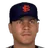
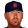
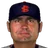
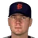
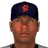

Major League Baseball · Depth chart & lineups
San Francisco Seals
← Team page · Payroll · Transactions
Based on games played and started through May 13, 2002. The OOTP export has no saved depth chart or lineup card, so this is derived from real usage. Lineups and depth chart list only players on the active roster now (26 players).
Most common lineups
For each batting-order spot, the active player who started there most often against that kind of starter (each player used once). Starts in spot = games he started in that spot out of the games against that hand. AVG/OBP/SLG: his season line with this club.
vs. right-handed starters 33 games
| # | Player | Pos | Starts in spot | AVG | OBP | SLG |
|---|---|---|---|---|---|---|
| 1 | Jimmy Rollins | SS | 29 of 33 | .281 | .347 | .425 |
| 2 |  Rondell White | LF | 30 of 33 | .273 | .325 | .474 |
| 3 | Jacque Jones | RF | 31 of 33 | .270 | .325 | .426 |
| 4 | Tony Batista | 3B | 27 of 33 | .272 | .316 | .503 |
| 5 |  Andres Galarraga | 1B | 23 of 33 | .326 | .395 | .500 |
| 6 | Adrian Brown | CF | 20 of 33 | .310 | .353 | .437 |
| 7 | Benji Gil | 2B | 20 of 33 | .225 | .255 | .428 |
| 8 | Andres Torres | CF | 12 of 33 | .237 | .275 | .351 |
| 9 |  Ryan Doumit | C | 20 of 33 | .239 | .308 | .385 |
vs. left-handed starters 8 games
| # | Player | Pos | Starts in spot | AVG | OBP | SLG |
|---|---|---|---|---|---|---|
| 1 | Jimmy Rollins | SS | 7 of 8 | .281 | .347 | .425 |
| 2 | Rondell White | LF | 8 of 8 | .273 | .325 | .474 |
| 3 | Jacque Jones | RF | 7 of 8 | .270 | .325 | .426 |
| 4 | Andres Galarraga | 1B | 7 of 8 | .326 | .395 | .500 |
| 5 | Tony Batista | 3B | 6 of 8 | .272 | .316 | .503 |
| 6 | Adrian Brown | DH | 7 of 8 | .310 | .353 | .437 |
| 7 | Benji Gil | 2B | 5 of 8 | .225 | .255 | .428 |
| 8 | Terry Tiffee | 1B | 3 of 8 | .250 | .282 | .278 |
| 9 | Ryan Doumit | C | 7 of 8 | .239 | .308 | .385 |
Depth chart games started by position through May 13
| Pos | Role | Player | GS at pos | G | AVG | OBP | SLG | HR |
|---|---|---|---|---|---|---|---|---|
| C | Starter | Ryan Doumit | 33 | 33 | .239 | .308 | .385 | 4 |
| Backup 1 |  Scott Servais | 8 | 8 | .143 | .200 | .286 | 1 | |
| 1B | Starter | Andres Galarraga | 32 | 38 | .326 | .395 | .500 | 5 |
| Backup 1 | Terry Tiffee | 6 | 11 | .250 | .282 | .278 | 0 | |
| Backup 2 | Felipe Crespo | 3 | 7 | .235 | .350 | .235 | 0 | |
| 2B | Starter | Benji Gil | 37 | 37 | .225 | .255 | .428 | 6 |
| Backup 1 | Felipe Crespo | 2 | 7 | .235 | .350 | .235 | 0 | |
| Backup 2 | Tony Batista | 1 | 38 | .272 | .316 | .503 | 9 | |
| 3B | Starter | Tony Batista | 35 | 38 | .272 | .316 | .503 | 9 |
| Backup 1 | Terry Tiffee | 4 | 11 | .250 | .282 | .278 | 0 | |
| Backup 2 | Drew Henson | 2 | 6 | .438 | .526 | 1.062 | 3 | |
| SS | Starter | Jimmy Rollins | 38 | 40 | .281 | .347 | .425 | 4 |
| Backup 1 | Tony Batista | 1 | 38 | .272 | .316 | .503 | 9 | |
| LF | Starter | Rondell White | 36 | 38 | .273 | .325 | .474 | 6 |
| Backup 1 | Adrian Brown | 5 | 39 | .310 | .353 | .437 | 2 | |
| Backup 2 | Andres Torres | 0 | 28 | .237 | .275 | .351 | 1 | |
| CF | Starter | Andres Torres | 23 | 28 | .237 | .275 | .351 | 1 |
| Backup 1 | Adrian Brown | 16 | 39 | .310 | .353 | .437 | 2 | |
| Backup 2 | Rondell White | 2 | 38 | .273 | .325 | .474 | 6 | |
| RF | Starter | Jacque Jones | 38 | 39 | .270 | .325 | .426 | 4 |
| Backup 1 | Adrian Brown | 2 | 39 | .310 | .353 | .437 | 2 | |
| Backup 2 | Andres Torres | 1 | 28 | .237 | .275 | .351 | 1 | |
| DH | Starter | Adrian Brown | 16 | 39 | .310 | .353 | .437 | 2 |
| Backup 1 | Mike Hampton | 7 | 7 | .241 | .290 | .276 | 0 | |
| Backup 2 | Andres Galarraga | 6 | 38 | .326 | .395 | .500 | 5 | |
| Backup 3 | Drew Henson | 3 | 6 | .438 | .526 | 1.062 | 3 |
Rotation OOTP projected starters (projected_starting_pitchers.csv)
| # | Pitcher | Active | GS | W-L | IP | ERA | WHIP | K |
|---|---|---|---|---|---|---|---|---|
| 1 | Mike Hampton | Yes | 7 | 2-2 | 43.0 | 4.60 | 1.35 | 22 |
| 2 | Carlos Zambrano | Yes | 9 | 4-1 | 57.2 | 3.43 | 1.27 | 50 |
| 3 | Alex Graman | Yes | 4 | 3-3 | 30.1 | 4.45 | 1.52 | 22 |
| 4 |  Jake Peavy | Yes | 9 | 4-2 | 53.2 | 3.35 | 0.99 | 63 |
| 5 | Dave Burba | Yes | 9 | 4-1 | 57.1 | 2.83 | 1.24 | 45 |
Bullpen roles from usage: closer = most saves, setup = most holds, long relief = most innings per outing (1.1+ IP)
| Role | Pitcher | Throws | G | SV | HLD | IP | IP/G | ERA | K |
|---|---|---|---|---|---|---|---|---|---|
| Closer | Garrett Stephenson | RHP | 16 | 5 | 1 | 28.2 | 1.8 | 2.20 | 19 |
| Setup | Julio Mateo | RHP | 15 | 3 | 3 | 23.1 | 1.6 | 1.54 | 21 |
| Setup | Javier Lopez | LHP | 12 | 0 | 3 | 4.0 | 0.3 | 2.25 | 1 |
| Long relief | Shawn Sedlacek | RHP | 10 | 1 | 0 | 23.0 | 2.3 | 5.87 | 12 |
| Long relief | David Weathers | RHP | 9 | 0 | 2 | 15.1 | 1.7 | 1.76 | 15 |
| Middle relief | Scot Shields | RHP | 11 | 1 | 0 | 17.0 | 1.5 | 1.59 | 19 |
| Middle relief | Marc Valdes | RHP | 8 | 0 | 0 | 11.1 | 1.4 | 3.97 | 5 |
Bench active position players outside the regular lineups
| Player | Pos | G | PA | AVG | OBP | SLG |
|---|---|---|---|---|---|---|
| Scott Servais | C | 8 | 30 | .143 | .200 | .286 |
| Felipe Crespo | 1B | 7 | 20 | .235 | .350 | .235 |
| Drew Henson | 3B | 6 | 19 | .438 | .526 | 1.062 |
 Anthony Sanders | LF | 1 | 4 | .500 | .500 | .500 |
Injured list
| Player | Pos | List | Days left |
|---|---|---|---|
| Ruben Sierra | RF | 60-day | 95 |